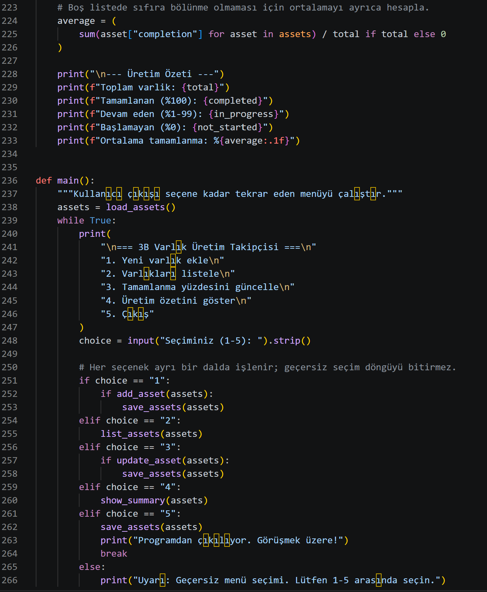

PYTHON · KOMUT SATIRI
3B Varlık Üretim Takipçisi
Oyun geliştirme ekiplerinin 3D varlıklarını takip etmesi için geliştirilmiş bir Python uygulaması. Varlık ekleme ve listeleme, tamamlanma yüzdesini güncelleme, özet görüntüleme ve CSV dosyasına kaydetme özellikleri sunuyor.
Ne öğrendim?
Yapay zekâ desteğiyle Python'da veri yönetimi, giriş doğrulama ve test süreçlerinin nasıl çalıştığını öğrendim.